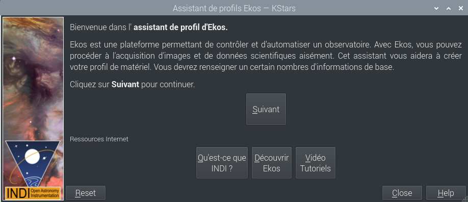
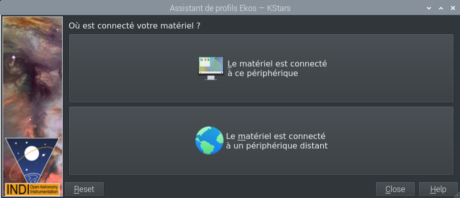
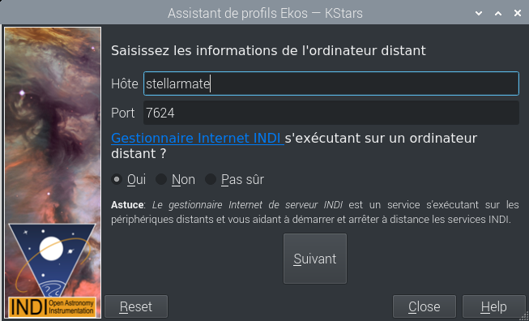
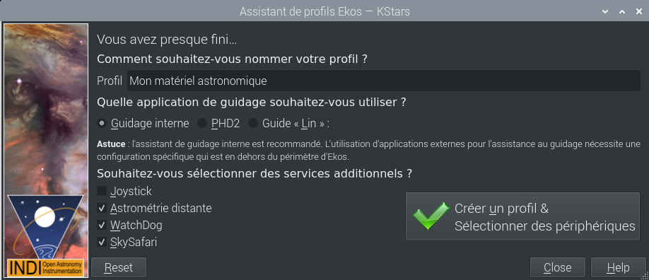
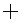

Ekos est un outil multi-plateforme (Windows®, Mac® OS et Linux®) avancé de contrôle d'observatoire et d'automatisation avec un intérêt particulier pour l'astrophotographie. Il est basé sur un modulaire et extensible pour réaliser les tâches courantes d'astrophotographie. Cela inclut du pointage GOTO hautement précis grâce au résolveur astrometry.net, la possibilité de mesurer et de corriger les erreurs d'alignement polaire, la mise au point et le guidage automatique ainsi que l'acquisition d'images simples ou multiples avec gestion de roue à filtres. Ekos est distribué avec KStars.
Vidéo d'introduction à Ekos
Fonctionnalités :
Contrôle de télescope, de CDD (& APN), de roue à filtres, de moteur de mise au point, de guide, de périphérique d'optique adaptative et de tout périphérique compatible INDI directement depuis Ekos.
Autoguidage natif intégré avec gestion automatique de décalage entre les expositions ainsi que gestion pour les périphériques d'optique adaptative en complément des guides traditionnels.
GOTO extrêmement précis grâce à l'utilisation du résolveur astrometry.net (mode en-ligne et hors-ligne gérés).
Charger & Pivoter : charger une image FIT, pivoter vers les coordonnées résolues et centrer la monture sur les coordonnées exactes de l'image afin d'obtenir le même champ.
Mesurer & corriger les erreurs d'alignement polaire en utilisant le résolveur astrometry.net.
Un outil d'alignement polaire assisté facile à utiliser. Un outil très rapide et fiable pour réaliser un alignement polaire précise de votre monture équatoriale allemande !
Acquérir et enregistrer des vidéos au format SER.
Ordonnanceur complètement automatisé pour contrôler l'intégralité de votre matériel, et permettant de sélectionner vos cibles d'acquisition tout en définissant des contraintes sur les conditions météorologiques. Réalisez vos acquisition de données même lorsque vous êtes absent !
Bibliothèque intelligente de Dark : Toutes vos trames de Dark de combinaisons de groupement de pixels et de température différents sont enregistrées pour des usages futurs. Ekos réutilise intelligemment ces trames pour éviter des acquisitions inutiles. La durée d'exploitation des ces trames peut être réglée.
Définition de multiples profils de matériel pour des configuration locales et à distance. Basculer facilement entre eux.
Mise au point automatique et manuelle en utilisant la méthode HFR (Half-Flux-Radius)
Mise au point automatique entre exposition quand la limite HFR déterminée par l'utilisateur dépasse une certaine limite.
Puissante gestion d'acquisition de séquences par lots avec préfixes, horodatage, sélection de roue à filtres et bien plus encore !
Exporter et importer des ensembles de file d'attente de séquences comme des fichiers de séquences Ekos d'extension
.esq.Centrer le télescope n'importe où dans une image FITS ou n'importe quelle image FITS avec une en-tête WCS (World Coordinate System).
Acquisition automatique des images de plage de lumière uniforme (PLU ou flat field en anglais). Définissez le pas de quantification souhaité (ADU ou Analog Digital Unit en anglais) et laissez Ekos faire le reste !
Annulation et reprise automatique des expositions si les erreurs de guidage dépassent une valeur configurable par l'utilisateur.
Gestion des dômes.
Intégration complète avec le planificateur d'observations de KStars et la carte du ciel.
Complètement contrôlable programmatiquement via D-Bus.
Intégration avec tous les périphériques INDI en natif.
Ekos fait partie de KStars. KStars/Ekos font déjà partie de votre appareil StellarMate et sont également disponibles pour Linux®, Mac® OS et Windows® si vous souhaitez les installer sur votre machine principale. Après avoir lancé KStars sur votre PC ou sur StellarMate (soit directement via HDMI ou via VNC), Ekos peut être trouvé dans le menu ou via l'icône Ekos de la barre d'outils principale ou encore avec le raccourci clavier (Ctrl+K). En plus de la fenêtre Ekos, KStars fournit un panneau de contrôle plus détaillé où vous pouvez directement régler et contrôler les paramètres des périphériques INDI.
Quand vous exécutez Ekos, il n'est pas nécessaire de démarrer le serveur INDI via le gestionnaire Web de StellarMate car Ekos gère cela de manière transparente.
L'outil d'astrophotographie Ekos est organisé en plusieurs Modules. Un module est un ensemble de fonctions et de tâches pour une étape particulière en astrophotographie et/ou dans l'acquisition de données. Actuellement les modules suivants sont inclus dans Ekos :
Module Configuration
Module Ordonnanceur
Module Acquisition
Module Mise au point
Module d'alignement
Module Guidage
Module Monture
Chaque module possède son propre onglet et icône dans l'interface graphique utilisateur comme illustré dans la capture d'écran ci-dessous :

- Module Configuration
Ainsi que suggéré par son nom, c'est ici que allez créer et gérer le profil de votre matériel et vous connecter aux périphériques. Il fournit aussi une vue résumant la procédure d'acquisition, de mise au point et de guidage dans un format compact afin de transmettre les informations plus importantes à l'utilisateur.
- Module Ordonnanceur
Après la prise en main d'Ekos, les utilisateurs sont encouragés d'utiliser le module Ordonnanceur puisqu'il facilite grandement tout le processus d'observation. Il vous permet de choisir plusieurs cibles, de spécifier les conditions à respecter et les trames nécessaire à l'acquisition. Cela fait, l'ordonnanceur calcule le meilleur horaire d'observation pour chaque objet et ensuite engage le contrôle total de la session d'observation, du début jusqu'à la fin.
- Module Acquisition
Ceci est le module principale pour le contrôle de la caméra et de la roue à filtre. Il permet de créer des séquences d'images, d'afficher des aperçus des acquisitions et de visionner des vidéos. Il gère le contrôle du rotateur et peut automatiquement procéder à l'acquisition de « flats » pour de multiples scénarios.
- Module Mise au point
Mesurez la netteté de vos images avec le module de mise au point en calculant le HFR (Half-Flux-Radius). Plus cette valeur est basse et meilleure sera la netteté. Vous pouvez exécuter le module de mise au point avec ou sans un focuser. Avec un focuser électronique, vous pouvez exécuter la procédure de mise au point automatique et Ekos procédera par itérations en calculant la position de mise au point optique.
- Module Guidage
Pour réaliser de l'imagerie longues poses, il est nécessaire d'utiliser du guidage pour s'assurer que l'image est verrouillée et stabilisée pour toute la durée de l'exposition. Les déviations avec le temps débouchent sur des images floues et des traînées d'étoile. Le module de guidage permet de sélectionner automatiquement une étoile guide et de verrouiller la monture pour garder cette étoile toujours à la même position. Si le module détecte une déviation de cette position verrouillée, il envoie des impulsions de correction à la monture pour la ramener à sa position initiale.
- Module Monture
La monture peut être contrôlée soit de manière interactive dans la carte du ciel soit avec le panneau de contrôle de la monture dans le module Monture. Configurez les propriétés du télescope (longueur de la focale & ouverture) pour le télescope imageur et le télescope faisant office de guide. Il est cependant recommandé de configurer les télescopes dans le profil de votre matériel plutôt que de modifier les valeurs directement dans le module Monture.
L'assistant de profil est un outil pratique pour configurer votre matériel pour la première fois. Il devrait apparaître automatiquement la première fois que vous lancez KStars. Suivez les instructions pour configurer votre premier profil de matériel.
- Page de bienvenue
- 
La première page de bienvenue contient contient quelques liens pour en apprendre davantage sur Ekos et INDI. Veuillez cliquer sur pour continuer.
- Page de l'emplacement du matériel
Ensuite vous tomberez sur la page de l'emplacement du matériel. Votre sélection dépend sur l'emplacement où est connecté votre matériel :
Le matériel est connecté sur ce périphérique : sélectionner cette option si Ekos tourne sur votre StellarMate (via HDMI ou VNC), sur votre périphérique (Windows®, Linux®) ou sur Mac® OS.
Le matériel est connecté à un périphérique distant : sélectionner cette option si Ekos tourne sur votre périphérique (Windows®, Linux®) ou Mac® OS et votre matériel est connecté à un ordinateur distant.
Le matériel est connecté à StellarMate : sélectionner cette option si Ekos tourne sur votre périphérique (Windows®, Linux®) ou Mac® OS, et si votre matériel est connecté à StellarMate.
Cliquez sur pour continuer.
- Page de connexion à distance
Dans le cas où vous avez sélectionné la seconde option à l'étape précédente, vous verrez apparaître la page de connexion à distance où vous devrez entrer le nom d'hôte ou l'adresse IP de l'appareil sur lequel est installé StellarMate. Vous pouvez obtenir le nom d'hôte depuis l'application mobile de StellarMate. Autrement, vous pouvez construire le nom d'hôte à partir du SSID de StellarMate qui devrait être visible lors d'une recherche de réseaux wifi. Supposons par exemple que le SSID soit
stellarmate. Le nom d'hôte sera alorsstellarmate.local. Vous pouvez toujours utiliser l'application StellarMate pour modifier le nom d'hôte par défaut à votre convenance.Pour la question concernant le gestionnaire INDI, il faut toujours sélectionner Oui puisque le gestionnaire Web de StellarMate est lancé par défaut sur l'appareil. Cliquez sur pour continuer.
- Page de création de profil
Vous pouvez maintenant choisir le nom de profil de votre matériel. Ensuite sélectionnez l'application de guidage que vous souhaitez utiliser. Le guidage interne est le seul officiellement géré par StellarMate. Vous pouvez choisir mais les détails ne sont pas couverts pas cette documentation. Si des services additionnels sont souhaités, veuillez cocher ceux que vous voulez utiliser.

Dans l'exemple ci-dessus, nous avons sélectionner les pilotes Astrométrie à distance, WatchDog et SkySafari. Des explications détaillées pour chacun d'entre eux apparaissent dans une infobulle lors du survol avec la souris. Une fois fait, cliquez sur le bouton et le modification de profil apparaît.
- Profiles
Vous pouvez définir des profils pour votre matériel et leur mode de connexion en utilisant le Modificateur de profil. Ekos est livré avec le profil qui peut être utilisé pour démarrer des périphériques de simulations à des fins de démonstrations :
Mode de connexion : Ekos peut être démarré soit en local soit à distance. Le mode en local es quand Ekos tourne sur la même machine que le serveur INDI, i.e. tous les périphériques sont connectés directement (physiquement) à la machine. Si vous exécutez le serveur INDI sur une machine distante (par exemple sur un Raspberry PI), vous devez configurer l'adresse de l'hôte du serveur INDI ainsi que son port d'écoute.
Connexion automatique : sélectionnez cette option pour activer la connexion automatique de tous vos périphériques après le démarrage du serveur INDI. Si vous ne choisissez pas cette option, les périphériques INDI seront créés mais ne seront pas automatiquement connectés. Cela est utile lorsque vous souhaitez modifier le pilote (i.e. modifier le débit en bauds, l'adresse IP ou tout autre réglage) avant la connexion.
Informations du site : Sélectionner cette option si vous souhaitez qu'Ekos charge les données d'emplacement et de fuseau horaire courantes au démarrage avec ce profil. Cela peut être utile lorsque vous vous connectez à un site géographiquement distant et pour qu'Ekos puisse se synchroniser.
Guidage : sélectionnez l'application de guidage que vous souhaitez utiliser. Par défaut Ekos utilise le module de guidage interne. Les applications externes incluent PHD2 et LinGuider.
Gestionnaire Web INDI : le gestionnaire web de StellarMate est un outil web pour démarrer et éteindre les pilotes INDI. Vous devriez toujours choisir cette option quand vous connectez à distance à un appareil StellarMate.
Sélection de périphériques : sélection de périphériques par catégories. Veuillez noter que si vous possédez un CCD avec un guide, vous pouvez laisser vide la liste déroulante du guide puisqu'Ekos détectera automatiquement le guide depuis le CCD. De même, si votre CCD intègre une roue à filtres, vous ne devez pas spécifier de périphérique de roue à filtre dans le menu de la liste déroulante.
- Démarrer & Arrêter INDI
Démarrer et arrêter les services INDI. Le panneau de contrôle de INDI sera affiché dès que le serveur INDI aura démarré. Vous modifier quelques options des pilotes comme les ports de connexion etc.
- Connecter & Déconnecter les périphériques
Connexion au serveur INDI. Selon les périphériques connectés, les modules EKOS (CCD, Mise au point, Guidage, etc.) seront démarrés et prêt à être utilisés.
Dès que vous êtes prêt, vous pouvez cliquer sur pour démarrer le serveur INDI et connecter votre matériel. Ekos créera les icônes des modules (Monture, Acquisition, Mise au point, etc.) au fur et à mesure que la connexion aux différents périphériques sera effective.
Les fichiers journaux sont un outil très important pour diagnostiquer les problèmes tant pour les pilotes INDI que pour Ekos. Pour toute demande d'aide, il est nécessaire de joindre les fichiers journaux à ce demande afin d'aider à diagnostiquer le problème. Selon la nature du problème, vous devrez activer la fonction journal pour la fonctionnalité ou le pilote concerné. Tout activer n'est pas recommandé non plus puisque cela générera beaucoup de données, et que la cause du problème risque de se trouver noyée dans toute cette information. Ainsi, n'activer que les fichiers journaux qui vous semblent nécessaires.
La courte vidéo suivante explique comment utiliser la fonctionnalité des fichiers journaux.
Fonctionnalité des fichiers journaux
Le module CDD est le module d'acquisition d'images et de vidéos d'Ekos. Il permet l'acquisition d'aperçu, de séquences d'images et d'enregistrer des vidéos au format SER tout en gérant une roue à filtres et un rotateur.
Veuillez sélectionner le CCD/APN et la roue à filtres (si disponible) pour l'acquisition. Réglez la température du CDD et la configuration des filtres.
CCD : choix de la camera CCD active. Si votre caméra possède un guide, vous pouvez également la sélectionner ici.
Roue à filtres : sélectionnez le périphérique actif de roue à filtre. Si votre caméra possède une roue à filtres intégrées, le périphérique sera le même que la caméra.
Refroidisseur : allumer/éteindre le refroidisseur. Vous pouvez régler la température souhaitée de la caméra si elle possède un refroidisseur. Cochez cette option pour forcer les réglages de température avant l'acquisition. Celle-ci ne débute que lorsque la température mesurée se trouve dans la plage de tolérance de température. La tolérance par défaut est de 0,1 degrés Celsius mais peut être modifiée dans les options du module d'Acquisition d'Ekos.
Configurez tous les paramètres d'acquisition comme détaillé ci-dessous. Une fois réglé, vous pouvez acquérir un aperçu en cliquant sur le bouton ou ajouter une tâche à la séquence.
Exposition : spécifie la durée d'exposition en secondes.
Filtre : spécifie le filtre désiré.
Nombre : spécifie le nombre d'images à acquérir.
Attente : spécifie la durée entre deux acquisitions en secondes.
Type : spécifie le type de trames CCD. Les options sont , , et .
ISO : spécifie la value ISO (seulement pour les APN).
Format : spécifie le format d'enregistrement des images. Pour les tous les CCD, seule l'option est disponible. Pour les APN, vous pouvez enregistrer les images au format (i.e. RAW ou JPEG) en plus du format .
Propriétés personnalisables : réglage de propriétés étendues disponibles dans la caméra pour la configuration des tâches.
Calibration : pour les trames Dark & Flat, vous pouvez spécifier des options additionnelles expliquées dans la section de la calibrations des trames ci-dessous.
Trame : spécifie l'origine gauche (X), haute (Y), la largeur (W) et la hauteur (H) des trames du CCD. Si vous avez modifié la dimension des trames, vous pouvez la réinitialiser en cliquant sur le bouton .
Groupement de pixels : spécifie le groupement de pixels horizontal (X) et vertical (Y).
Beaucoup de caméras proposent des propriétés additionnelles qui ne peuvent pas être directement contrôlées dans les réglages de l'acquisition en utilisant les commandes communes. Les commandes d'acquisition décrites ci-dessus représentent les réglages les plus courants qui sont partagés par les différentes caméras mais chaque caméra est unique et peut proposer des propriétés étendues propres. Bien que vous puissiez utiliser le panneau de contrôle d'INDI pour régler les propriétés du pilote, il est important de pouvoir régler ces propriétés pour chaque tâche de la séquence. Quand vous cliquez sur le bouton , une boîte de dialogue apparaît divisée en Propriétés disponibles et Propriétés de la tâche. En déplaçant une Propriétés disponibles vers la liste des Propriétés de la tâche, sa valeur courante peut être enregistrée en cliquant sur le bouton . Quand vous ajoutez une tâche à la file d'attente des séquences, les valeurs des propriétés sélectionnées dans la liste des Propriétés de la tâche seront enregistrées et sauvées.
La prochaine vidéo explique ce concept en détails avec un exemple concret :
Fonctionnalité des propriétés personnalisables

Les réglages qui spécifient le répertoire d'enregistrement des images et la manière de générer des noms de fichier unique et également les modes de téléversement.
Préfixe : spécifie le préfixe à ajouter au nom généré. Vous pouvez également ajouter le type de trame, le filtre, la durée d'exposition et l'horodatage ISO 8601. Par exemple, si vous spécifiez un préfixe
M45et cochez les cases Type et Filtre avec un filtre et un type , le nom généré ressemblera à :M45_Light_Red_001.fits
M45_Light_Red_002.fits
Si la case HD est cochée, un horodatage sera ajouté au nom de fichier, e.g. :
M45_Light_Red_001_2016-11-09T23-47-46.fits
M45_Light_Red_002_2016-11-09T23-48-34.fits
Script : spécifie un script facultatif à être exécuté après chaque acquisition complétée. Le chemin complet du script doit être indiqué et il doit être exécutable. Une valeur de zéro doit être retournée en cas de succès afin de permettre à la séquence de continuer. Si une valeur différente de zéro est retournée par le script, alors la séquence sera interrompue.
Répertoire : spécifie le répertoire local d'enregistrement des images.
Téléversement : spécifie comment les images doivent être téléversées.
Client : les images sont téléversées vers Ekos et enregistrées dans le répertoire local spécifié ci-dessus.
Local : les images sont enregistrées en local sur l'ordinateur distant.
Les deux : les images sont enregistrées sur l'ordinateur distant et téléversées vers Ekos.
Si vous spécifiez ou , vous devez indiquez le répertoire distant pour l'enregistrement des images. Par défaut, toutes les images sont téléversées vers Ekos.
À distance : si vous sélectionner ou , vous devez indiquer le répertoire distant d'enregistrement des images.
Les réglages des limites sont applicables à toutes les images dans la file d'attente des séquences. Quand une limite est dépassée, Ekos déclenchera l'action appropriée pour remédier à la situation comme expliqué ci-dessous.
Déviation de guidage : si cette cette option est cochée, la déviation maximale de guidage pour une exposition est appliquée. Si la déviation de guidage (mesurée en secondes d'arc) est dépassée, la séquence est interrompue. Elle reprendra dès que la déviation de guidage redeviendra inférieure à la limite.
Mise au point automatique si HFR > : si la mise au point automatique est activée dans le module de mise au point et qu'au moins une opération de mise au point automatique s'est terminée avec succès, vous pouvez indiquer la valeur maximale de HFR acceptable. Si cette option est activée, alors la valeur HFR est recalculée entre chaque acquisition ; si cette valeur dépasse la valeur limite acceptable, une mise au point automatique est déclenchée. En cas de succès, la séquence reprend, sinon elle est interrompue.
Retournement au méridien : si cela est géré par la monture, spécifie l'angle horaire limite (en heures) avant qu'un retournement au méridien est déclenché. Par exemple si vous spécifiez la durée de retournement au méridien à 0,1 heure, alors Ekos attendra que la monture dépasse le méridien de 0,1 heure (6 minutes) pour déclencher le retournement au méridien. Ensuite Ekos réalisera un alignement en utilisant astrometry.net (si l'alignement est utilisé) et reprendra le guidage (s'il était démarré avant cette opération) et l'acquisition.
La file d'attente des séquences est la plateforme principale du module d'acquisition d'Ekos. C'est l'endroit où vous planifiez et exécutez les tâches en utilisant le puissant ordonnanceur intégré. Pour ajouter une tâche, il suffit de sélectionner tous les paramètres des réglages de l'acquisition et du nommage de fichier comme indiquer ci-dessus. Ensuite, cliquez sur le bouton d'ajout  de la file d'attente des séquences pour l'ajouter à la file d'attente.

Vous pouvez ajouter autant de tâches que désirées. Bien que cela ne soit pas strictement nécessaire, il est préférable d'ajouter les tâches d'acquisition de Dark et Flat après celles de Light. Une fois que vous avez terminé d'ajouter des tâches, cliquez simplement sur le bouton pour débuter l'exécution des tâches. L'état d'une tâche passe de Inactif à En progrès et enfin Complété une fois terminée. La file d'attente des séquences démarre automatiquement la prochaine tâche. Si une tâche est interrompue, elle peut être reprise. Pour mettre une tâche en pause, cliquez sur le bouton  et la tâche sera arrêtée après que l'acquisition en cours soit terminée. Pour réinitialiser l'état de toutes les tâches, cliquez simplement sur le bouton de réinitialisation . Veuillez noter que cela réinitialise également le compteur de progression de toutes les images. Pour afficher un aperçu d'une image dans l'afficheur FITS de KStars, cliquez sur le bouton .
et la tâche sera arrêtée après que l'acquisition en cours soit terminée. Pour réinitialiser l'état de toutes les tâches, cliquez simplement sur le bouton de réinitialisation . Veuillez noter que cela réinitialise également le compteur de progression de toutes les images. Pour afficher un aperçu d'une image dans l'afficheur FITS de KStars, cliquez sur le bouton .
Les séquences peuvent être enregistrées dans un fichier XML au format .esq (Ekos Sequence Queue). Pour charger une séquence, cliquez sur le bouton  . Veuillez noter que cela remplacera toute séquence déjà dans la file d'attente d'Ekos.
. Veuillez noter que cela remplacera toute séquence déjà dans la file d'attente d'Ekos.
Important
Progression des tâches : Ekos est conçu pour exécuter les séquences sur plusieurs nuits si nécessaire. Ainsi, si l'option Se rappeler de la progression des tâches est activée dans les options d'Ekos, Ekos fera un scan du système de fichiers pour déterminer le nombre d'images déjà présentes et terminées et reprendra la séquence au point où il s'était arrêté. Si ce n'est pas le comportement désiré, vous pouvez simplement désactiver cette option.
Pour modifier une tâche, il faut double cliquer sur son nom. Remarquez comment le bouton d'ajout s'est modifié en un bouton coché  . Faites vos changements dans le panneau gauche du module CCD et ensuite cliquez sur la coche pour appliquer. Pour annuler la modification, cliquez n'importe où dans un espace vide de la table de séquences.
. Faites vos changements dans le panneau gauche du module CCD et ensuite cliquez sur la coche pour appliquer. Pour annuler la modification, cliquez n'importe où dans un espace vide de la table de séquences.
Si votre caméra gère les vidéos en direct, vous pouvez cliquer sur le bouton Vidéo en direct pour débuter la diffusion en continu. La fenêtre de diffusion permet l'enregistrement et l'extraction de trames de la vidéo.
Fonctionnalité d'enregistrement

Cliquez sur l'icône du filtre  pour ouvrir la boîte de dialogue de configuration des filtres. Si vous utilisez des filtres qui ne sont pas tous de même longueur (parafocale) et requièrent par conséquent des réglages de mise au point différents, vous pouvez configurer ces réglages dans cette fenêtre.
pour ouvrir la boîte de dialogue de configuration des filtres. Si vous utilisez des filtres qui ne sont pas tous de même longueur (parafocale) et requièrent par conséquent des réglages de mise au point différents, vous pouvez configurer ces réglages dans cette fenêtre.
Configuration individuelle des réglages de chaque filtre :
Filtre : spécifie le nom du filtre.
Exposition : spécifie la durée d'exposition lors de la réalisation de la mise au point avec ce filtre. Par défaut, cette valeur vaut une seconde.
Décalage : spécifie les décalages relatifs. Ekos déclenchera une mise au point avec ce décalage s'il existe une différence entre le décalage du filtre courant et le filtre cible.
Mise au point automatique : sélectionnez cette option pour déclencher une mise au point automatique lorsque le filtre est changé pour ce filtre.
Verrouiller le filtre : spécifie le filtre à configurer et à verrouiller quand la mise au point automatique est réalisé pour ce filtre.
Prenons un exemple. Supposons qu'une séquence d'acquisition est en cours et que le filtre courant est le Vert, ainsi le décalage relatif est de +300. La prochaine image de la séquence utilise le filtre d'hydrogène alpha (Hα), donc avant qu'Ekos prenne la prochaine trame, les actions suivantes seront réalisées :
Comme la luminosité est spécifiée comme étant le filtre verrouillé et que la mise au point automatique est activée, le filtre est changé en luminosité.
Un décalage de mise au point de -300 est appliqué puisque le filtre précédent Vert avait été déplacé à +300 auparavant.
La procédure de mise au point automatique est initialisée.
Dès qu'elle est terminé, le filtre est changé en Hα.
Un décalage de mise au point de -1200 est appliqué.
La séquence d'acquisition se poursuit.
Les images sont affichées dans l'outil d'affichage de KStars ainsi que dans l'écran de résumé. Vous pouvez spécifier les options d'affichage de l'afficheur.
Dark automatique : vous pouvez soustraire automatiquement un Dark d'une image en cochant cette option. Veuillez noter que cette option n'est disponible que lors de l'utilisation de l'aperçu. Il n'est pas possible de l'utiliser en mode traitements par lots.
Effets : filtre d'amélioration d'une image à appliquer après son acquisition.
Les rotateurs de champs sont gérés par INDI & Ekos. L'angle du rotateur est l'angle rapporté par le rotateur mais n'est pas nécessairement l'angle de position. Un angle de position de zéro indique que le haut d'une trame (repéré par une petite flèche) pointe directement vers le pôle. L'angle de position est exprimé en degrés de l'est par rapport au nord, ainsi, un angle de position de 90 indique que le haut d'une trame pointe à 90 degrés (sens anti-horaire) du pôle. Quelques exemples d'angle de position d'étoiles binaires.
Afin de calibrer l'angle de position (AP), prenez une image et resolvez-là dans le module d'alignement d'Ekos. Un décalage et un coefficient multiplicateur sont appliqués à l'angle brute pour calculer l'angle de position. La boîte de dialogue du rotateur d'Ekos permet un contrôle direct de l'angle brut et de l'angle de position. Le décalage et le coefficient multiplicateur peuvent être modifiés manuellement afin de synchroniser l'angle brute du rotateur avec l'angle de position actuel. Cochez Synchroniser FOV to AP pour effectuer la rotation de l'indicateur du champ de vision courant sur la carte du ciel avec la valeur d'angle de position.
Réglages du rotateur
On peut assigner à chaque tâche d'acquisition un angle de rotation différent mais soyez conscient que cela peut causer l'interruption du guidage puisque l'étoile guide sera perdue pendant la rotation. Ainsi, pour la plupart de séquences, l'angle du rotateur est identique pour toutes les tâches d'acquisition.

Pour les trames de champ uniforme (Flat), vous pouvez régler les options de calibration pour automatiser le processus. Ces options sont conçues pour faciliter l'acquisition automatique des trames de champ uniforme. Elles peuvent également être utilisées pour l'acquisition des trames Dark et Bias. Si votre caméra possède un obturateur mécanique, il n'est pas nécessaires de régler ces options sauf si vous souhaitez fermer le bouchon anti-poussière pour vous assurer qu'aucune lumière passe dans le tube optique. Pour les Flats, vous devez spécifier la source de lumière, puis une durée d'exposition. La durée peut être spécifiée soit manuellement soit basée sur un calcul d'ADU (Analog Digital Unit ou pas de quantification).
Source de lumière pour le Flat
Manuel : la source de lumière est manuel.
Bouchon anti-poussière avec source de lumière intégrée : pour l'utilisation de ce type d'appareil (i.e. FlipFlat),
Bouchon anti-poussière avec source de lumière externe : pour l'utilisation de bouchon anti-poussière avec source de lumière externe.
Mur : la source de lumière est un panneau placé contre un mur. Spécifier les coordonnées d'azimut et d'altitude du panneau et la monture pivotera dans cette direction avant de débuter l'acquisition des trames.
Aube / Crépuscule : non géré actuellement.
Durée d'exposition de l'acquisition de Flat
Manuelle : la durée est spécifiée dans la file d'attente de la séquence.
ADU : la durée est variable jusqu'à que la valeur ADU est atteinte.
Avant le début de la procédure d'acquisition de la calibration, vous pouvez demander à Ekos de parquer la monture et/ou le dôme. Selon la sélection de la source de Flat ci-dessus, Ekos va utiliser la source de lumière appropriée pour les Flats avant de commencer l'acquisition des trames de Flat. Si une valeur ADU est spécifiée, Ekos commence par prendre une série d'images pour établie la courbe nécessaire pour atteindre la valeur ADU souhaitée. Une fois que cette valeur est calculée, une nouvelle image est prise et l'ADU est recalculée jusqu'à ce que la valeur souhaitée est atteinte.
Afin de faire la mise au point d'une image, Ekos a besoin d'établir une méthode numérique pour juger la valeur de votre mise au point. Il est très facile pour un humain d'estimer si une image n'est pas nette, mais comment est-ce qu'Ekos peut le savoir ?
Il existe plusieurs méthodes. L'une d'entre elles est de calculer la largeur complète à la moitié de la hauteur (FWHM ou Full Width at Half Maximum) du profil d'une étoile de l'image et ensuite ajuster la mise au point jusqu'à minimiser cette valeur. Le problème avec cette méthode c'est qu'elle suppose que la position de mise au point initiale est proche de la mise au point optimale. De plus, elle ne se comporte pas très bien pour des flux très faibles. Une méthode alternative est le HFR (Half-Flux-Radius) qui mesure la largeur en pixels en comptant du centre de l'étoile jusqu'à ce que la valeur accumulée de l'intensité vaut la moitié du flux total de l'étoile. Cette méthode est bien plus stable dans des conditions de ciel défavorables et quand le profil de luminosité des étoiles est faibles ou encore quand la position de départ de la mise au point est éloignée de la position optimale.
Après qu'Ekos ait traité une image, il sélectionne l'étoile la plus brillante et commence à mesurer son HFR. Il peut sélectionner une étoile automatiquement ou vous pouvez lui indiquer quelle étoile utiliser. Il est en général recommandé de sélectionner des étoiles pas trop brillantes car elles risqueraient d'être saturées durant la procédure de mise au point. Une magnitude d'étoile de 3 ou 4 est souvent suffisant.
Ekos comment ensuite la procédure de mise en point en indiquant au focuser de faire la mise au point vers l'intérieur et vers l'extérieur et de mesurer à nouveau le HFR. Ce processus itératif produit une courbe en V dont le centre correspond à la position de mise au point optimale et dont la pente dépend des propriétés du télescope et de la caméra. Dans Ekos, une courbe en V complète n'est jamais construite puisque la procédure de mise au point fonctionne de manière itérative et que la plupart du temps, une demi courbe en V est mesurée, comme illustrée dans l'image du module de mise au point.
La valeur variant linéairement avec la distance de mise au point, il est possible de calculer la valeur optimale de la position de mise au point. Dans la pratique, Ekos fonctionne de manière itérative en déplaçant le focuseur par pas discrets dont la valeur a été décidée initialement par l'utilisateur et ensuite par la valeur de la pente de la courbe en V, afin de s'approcher de plus en plus de la position optimale et enfin en réduisant le nombre de pas lorsque la solution optimale est proche. Avec l'algorithme Itératif par défaut, la procédure s'arrête quand la valeur HFR mesurée se trouve dans une plage de tolérance prédéfinie. En d'autres termes, quand la procédure commence à chercher une solution dans cette plage de tolérance, elle vérifie si la valeur courante du HFR est % de différence comparée à la valeur HFR minimale mesurée et si c'est le cas, la procédure est réputée réussie. La valeur par défaut est 1% et est suffisante dans la plupart des situations. L'option Pas spécifie le nombre initial de pas pour le mouvement du focuseur. Si l'image est très loin de la mise au point optimale, on règle la taille des pas à une grande valeur (i.e. > 250). Sinon, on peut réduire cette valeur (< 50). Il faut procéder par tâtonnement pour trouver la meilleure valeur de départ, mais Ekos ne l'utilise que pour le premier mouvement de mise au point, les mouvements des suivantes dépendant des calculs de la pente de la courbe en V.
Quand l'algorithme Polynomial est utilisé, la procédure débute en mode Itératif mais une fois que l'on franchit l'autre côté de la courbe en V (i.e. quand les valeurs HFR recommencent d'augmenter après avoir diminuer pour un moment), Ekos commence un calcul d'interpolation polynomial afin de trouver une solution qui prédit la position HFR minimale. Si une solution valide est trouvée, la procédure de mise au point est réputée réussie.
Bien que le module de mise au point d'Ekos gère les focuseurs à position relative, il est hautement recommandé d'utiliser des focuseurs à position absolue.
Tout focuseur compatible INDI est géré. Il est recommandé d'utiliser des focuseurs à position absolue puisque leur position absolue est connue à l'allumage. Dans INDI, la position zéro du focuseur correspond à un tube complètement rentré. Quand la mise au point se fait vers l'extérieur, la position du focuseur augmente et inversement. Les types suivants de focuseurs sont gérés :
Position absolue : focuseurs à position absolue tels que RoboFocus, Moonlite, etc.
Position relative : focuserus à position relative.
Simple : focuseurs DC/PWM avec aucun retour de position.
Pour les focuseurs à position absolue, vous pouvez régler le comptage des pas. Pour avoir une visualisation en continu de la caméra, cliquez sur le bouton . Une image sera prise régulièrement selon les réglages du groupe CCD et roue à filtres. Vous pouvez mettre au point en avant ou en arrière en utilisant les boutons respectifs et chacun fera bouger d'un certain nombre de pas en fonction de ce qui a été configuré dans les réglages de la mise au point. Pour les focuseurs à position relative et absolue, la taille du pas est mesurée en coche et pour les focuseurs DC simple, il est mesuré en millisecondes.
Pour débuter la procédure de mise au point automatique, cliquez simplement sur le bouton .

Vous devez spécifier le CCD et la roue à filtre (si vous en avez une) à utiliser pour la procédure de mise au point automatique. Vous pouvez verrouiller un filtre spécifique de la roue à filtre chaque fois que la procédure de mise au point automatique est invoquée. Généralement, l'utilisateur devrait choisir le filtre Clair/Luminance pour cet usage pour qu'Ekos puisse toujours utiliser le même filtre pour cette procédure. Ce filtre verrouillé est également utilisé pour le module Alignement pour les acquisitions d'astrométrie.
Vous pouvez aussi choisir un filtre Effets pour améliorer l'image pour les aperçus. Il est grandement conseillé d'éteindre tout effet durant la procédure de mise au point automatique puisqu'il risque d'interférer avec les calculs de HFR. Pour les APN, vous pouvez modifier les réglages d'ISO. Vous pouvez réinitialiser les sous-trames de mise au point à des acquisitions plein format en cliquant sur le bouton .
Il peut être nécessaire d'ajuster les réglages de mise au point pour réaliser une procédure de mise au point automatique réussie et fiable. Les réglages sont conservés entre les sessions.
Sélection automatique d'étoile : sélectionner automatiquement la meilleure étoile de mise au point de l'image.
Sous-trame : sous-trame autour de l'étoile à mettre au point durant la procédure de mise au point automatique. L'activation de cette option peut accélérer de manière significative la procédure.
Image Dark : cochez cette option pour l'acquisition d'image Dark si nécessaire et réaliser une soustraction de cette image Dark.
Suspendre le guidage : suspendre le guidage pendant que la mise au point automatique est en cours. Si la procédure de mise au point peut perturber l'étoile guide (i.e. lors de l'utilisation du port guide intégré IGP où le guide est physiquement attaché au CCD primaire), alors il est recommandé d'activer cette option. Elle n'est cependant pas nécessaire pour les guides hors axe (OAG).
Taille de la boîte : règle la taille de la boîte qui délimite l'étoile de mise au point. Augmentez si vous avez de très grosses étoiles, Pour la mise au point avec un masque de Bathinov, vous pouvez encore plus l'augmenter pour inclure les motifs de diffraction.
Déplacement maximum : déplacement maximum en cran avant que la procédure de mise au point automatique ne s'arrête.
Pas : taille initiale de pas en cran pour causer un changement notable de la valeur HFR. Pour les focuseurs simple basé sur le temps, cela correspond au temps en millisecondes pour déplacer le focuseur vers l'avant ou vers l'arrière.
Tolérance : le pourcentage de tolérance est le critère d'arrêt de la procédure de mise au point automatique pour l'algorithme Itératif. Durant cette procédure, les valeurs HFR sont enregistrées et une fois que le focuseur est proche de la position optimale, il compare les HFR aux valeurs de HFR minimales et s'arrête dès qu'une valeur HFR est dans cette plage de tolérance. Diminuez cette valeur pour restreindre le rayon de la solution et inversement.
Warning
Veuillez noter que si cette valeur est trop faible, il est possible que l'algorithme entre dans une boucle qui fera échouer la procédure de mise au point automatique.
Seuil : la valeur en pourcentage du seuil est utilisée pour détecter les étoiles pour l'algorithme de détection Seuil. Augmenter cette valeur pour restreindre le centroïde au cœurs brillants. Diminuez-là pour inclure les étoiles floues.
Algorithme : choisissez l'algorithme pour la procédure de mise au point automatique :
Itératif : déplace le focuseur par pas discret de taille initiale fixée. Une fois que la pente de la courbe est calculée, les tailles de pas suivants sont calculés pour atteindre une solution optimale. L'algorithme s'arrête dès que la valeur HFR mesurée se trouve dans la plage de tolérance définie.
Polynomial : débute avec la méthode itérative. Quand la position passe de l'autre côté de la courbe en V, une interpolation polynomiale est calculée pour déterminer la position de la solution minimale. Cet algorithme peut être plus rapide que la méthode itérative avec un bon ensemble de données.
Trames : nombre moyen de trames à acquérir. Un HFR est enregistré pour chaque acquisition. Si une valeur instantanée de HFR n'est pas fiable, vous pouvez faire la moyenne sur ce nombre de trames pour augmenter le rapport signal sur bruit.
Détection : choix de l'algorithme de détection d'étoile. Chaque algorithme a ses forces et ses faiblesses. Il est recommandé de garder les valeurs par défaut sauf s'il échoue à détecter correctement les étoiles.
Bathinov : cette méthode détection peut être utilisée quand un masque de Bathinov est utilisé pour la mise au point. Prenez d'abord une image, puis sélectionner l'étoile sur laquelle faire la mise au point. Une nouvelle image sera prise et le motif de diffraction sera analysé. Trois lignes seront affichées sur le motif de diffraction montrant la qualité de la détection et de la mise au point. Quand le motif n'est pas bien détecté, le paramètre « nombre de lignes » peut être ajusté pour améliorer la détection. La ligne avec les cercles aux deux bouts est un indicateur grossi pour la mise au point. Plus cette ligne est courte et meilleure sera la mise au point.
Le graphique de la courbe en V affiche le HFR selon la position absolue. Le centre de cette courbe représente la position optimale de la mise au point. Une fois qu'Ekos passe de l'autre côté de la courbe, il recule pour trouver la position optimale. La position finale de la mise au point dépend de l'algorithme choisi.
Lors d'acquisition en boucle, l'axe horizontal représente le numéro de la trame. Cela pour vous aider dans ce processus puisque vous pouvez voir comment le HFR change au cours du processus.
Le profil relatif est un graphique qui représente les valeurs HFR affichées les unes contre les autres. Les valeurs basses de HFR correspondent à des formes plus étroites et inversement. La courbe en rouge plein représente le profil de la valeur HFR courante, alors que la courbe en vert pointillé représente la valeur précédente. Enfin, la courbe en magenta montre la première valeur HFR mesurée et est affichée quand la procédure de mise au point automatique est terminée. Ce graphique vous permet de juger de la qualité de la mise au point relative.

Le module de guidage d'Ekos permet le guidage en utilisant soit le puissant guidage interne ou un guidage externe comme PHD2 ou encore lin_guider. Lors de l'utilisation du guidage interne, des trames CCD de guidage sont prises et envoyé à Ekos pour analyse. Selon les déviations de l'étoile guide par rapport à sa position de verrouillage, des impulsions de correction sont envoyés à la monture via tout périphérique qui gère les ports ST4. Vous pouvez alternativement envoyer les corrections à la monture directement si cela est géré par le pilote de la monture. La plupart des options qui se trouve dans le module de guidage sont bien documentées, il vous suffit de survoler un élément et une infobulles apparaîtra contenant de l'information très utile.
Pour le guidage, il faut sélectionner un CCD de guidage dans la configuration de profil d'Ekos. Il faut renseigner l'ouverture et la longueur focale dans le pilote du télescope. Si le CCD de guidage est monté sur un télescope de guidage séparé, il faut également indiquer sa longueur focale et son ouverture. Vous pouvez renseigner ces valeurs dans l'onglet Options du pilote du télescope ou depuis le module Monture. L'auto-guidage est un processus à deux étapes : la calibration & et le guidage.
Introduction au guidage
Durant les deux processus, vous devez configurer ce qui suit :
Le guide : sélectionner le CCD du guide.
Via : sélectionne le périphérique qui reçoit les impulsions de correction pour l'autoguidage de la part d'Ekos. Les CCD de guidage ont généralement un port ST4. Si vous utiliser le port ST4 du guide pour autoguider votre télescope, régler le pilote du guide dans la boîte Via. Le CCD du guide recevra les impulsions de corrections d'Ekos qui les transmettra à la monture via le port ST4. Alternativement, certains télescopes gère des commandes impulsions et vous pouvez ainsi configurer le télescope pour être le récepteur des impulsions de corrections d'Ekos.
Exposition : durée d'exposition du CCD en seconde.
Groupement (binning) : groupement de pixels du CCD.
Boîte : taille de la boîte entourant l'étoile guide. Sélectionner une taille adaptée qui ne doit être ni trop grande ni trop petite pour l'étoile sélectionnée.
Effets : spécifier le filtre à appliquer à l'image pour l'améliorer.
Les trames Dark sont immensément utile pour aider à réduire le bruit des trames de guidage. Il est hautement recommandé d'en prendre avec de commencer la calibration et la procédure de guidage. Pour prendre une trame Dark, cocher la case Dark et ensuite cliquez sur le bouton . La première fois que vous réaliserez cela, Ekos vous demandera si votre caméra possède un obturateur et cela n'est pas le cas, il vous avertira de couvrir votre caméra ou télescope avant le début de l'acquisition. Si votre caméra en possède un, alors Ekos procédera directement à l'acquisition des trames Dark. Toutes les trames dark seront automatiquement enregistrées dans la bibliothèque de Dark. Par défaut ces trames seront utilisées pendant 30 jours après quoi une nouvelle série sera prise. Cette durée peut être configurée dans Configuration Edkos dans la boîte de dialogue de la configuration de KStars.

Il est recommandé de prendre des trames Dark couvrant plusieurs groupement de pixels et de durée d'exposition afin qu'elles puissent être utilisées de manière transparente par Ekos lorsque c'est nécessaire.
Dans la phase de calibration, vous devez prendre une image, choisir une étoile guide et cliquer sur le bouton pour débuter la procédure de calibration. Si la calibration avait déjà été faite préalablement et avait été couronnée de succès, alors l'autoguidage démarrera immédiatement, sinon la procédure de calibration débutera. Si la case Étoile automatique est cochée, alors il ne reste qu'à cliquer sur le bouton et Ekos va sélectionner automatiquement la meilleure étoile guide de l'image et poursuivre la procédure de calibration. Si cette case est décochée, Ekos va essayer de sélectionner la meilleure étoile guide dans le champ mais vous devrez confirmer ou modifier la sélection avant de pouvoir débuter la procédure de calibration. Les options de calibrations sont :
Impulsions : la durée des impulsions en millisecondes à envoyer à la monture.
Deux axes : cochez si vous souhaitez que la procédure de calibration se fasse sur les axes en AD & en DEC. Si décochée, la calibration ne sera réalisée que sur l'axe en AD.
Étoile automatique : si cette option est sélectionnée, Ekos va essayer de trouver la meilleure étoile guide dans l'image et commencer la procédure de calibration automatiquement.
La position du réticule représente la position de l'étoile guide que vous (ou la sélection automatique) avez choisi dans l'image de guidage. Vous devriez choisir une étoile qui ne se trouve pas trop près des bords et si l'image n'est pas clair, vous pouvez appliquer différents effets pour l'améliorer.
Ekos débute la procédure de calibration en envoyant des impulsions à la monture pour la déplacer en AD et en DEC. Si la procédure échoue à cause de petite dérive, essayez d'augmenter la durée des impulsions. Pour réinitialiser la calibration, cliquez sur l'icône poubelle à côté du bouton Guide.
Warning
La calibration peut échouer pour plusieurs raisons. Pour augmenter les chances de succès, essayer les astuces suivantes.
Meilleur alignement polaire : c'est un point critique pour assurer le succès de toute session d'astrophotographie. Réalisez un rapide alignement polaire avec un télescope polaire (si disponible) ou en utilisant la procédure d'alignement polaire d'Ekos du module d'alignement d'Ekos.
Régler le groupement de pixels sur 2x2 : le groupement de pixels augmente le rapport signal sur bruit et est souvent très important pour le succès des procédures de calibration et de guidage.
Préférez l'utilisation de câble ST4 entre la caméra guide et la monture plutôt que l'envoi de commandes de impulsions vers la monture.
Essayez différents filtres (e.g. à haut contraste) et voyez si cela permet de réduire le bruit.
Taille des carrés plus petite.
Prenez des trames Dark pour réduire le bruit.
Essayez le gain proportionnel en DEC ou désactiver complètement le contrôle en DEC et voyez si cela fait une différence.
Laissez l'algorithme à sa valeur par défaut ().

Une fois que la procédure de calibration s'est terminée avec succès, le guidage débutera automatiquement. Les performances de guidage sont affichées dans le graphique de dérive où la déviation en AD est tracée en vert et la déviation en DEC en bleu. Ces couleurs peuvent être modifiées dans le schéma de couleurs de KStars dans KStars. L'axe vertical désigne la déviation en secondes d'arc de la position centrale de l'étoile guide et l'axe horizontal représente le temps. Vous pouvez survoler les lignes pour connaître les déviations exactes à chaque instant. De plus, vous pouvez zoomer et déplacer le graphique pour inspecter une zone particulière.
Ekos peut utiliser divers algorithmes pour déterminer le centre de masse de l'étoile guide. Par défaut, c'est l'algorithme Intelligent convient à la plupart des situations. L'algorithme Rapide est basé sur les calculs de HFR. Vous pouvez essayer de changer d'algorithme si Ekos ne parvient pas à garder correctement l'étoile guide dans le carré de guidage.
La zone d'informations affiche des informations sur le télescope & FOV, ainsi que sur les déviations de l'étoile guide et les impulsions de corrections envoyées à la monture. La valeur RMS pour chaque axe est affichée avec la valeur RMS totale en secondes d'arc. Le guidage interne emploie un régulateur_PID pour corriger le suivi de la monture. Actuellement seuls les gains proportionnels et intégraux sont utilisés par l'algorithme, ainsi leur ajustement devrait affecter la longueur des impulsions (en millisecondes) générées qui seront envoyées à la monture.
Pour activer les mini-déviations (dithering) entre les trames, assurez-vous de cocher la case Déviations. Par défaut, Ekos déplacera la boîte de guidage jusqu'à trois pixels après chaque acquisition dans le module d'acquisition. La durée de déplacement et sa direction sont aléatoires. Comme la performance de guidage peut osciller juste après le déplacement, vous pouvez configurer une durée de stabilisation avec la poursuite de la procédure d'acquisition. Dans les rares cas où la procédure de mini-déviations se bloque dans une boucle sans fin, vous pouvez configurer un délai maximal adéquat pour annuler la procédure. Mais même dans ce cas, vous pouvez choisir si cet échec doit mettre fin à la procédure d'autoguidage ou non. L'option Abandonner autoguidage si échec permet de configurer le comportement souhaité.
Les mini-déviations sans guide sont également possibles. Cela est utile si aucune caméra guide n'est disponible ou lors d'exposition très courte. Dans ce cas, la monture peut être commandée pour réaliser de mini-déviations dans une direction aléatoire pour une durée configuré avec l'option impulsion déviation sans guide.
Ekos permet différentes méthodes de guidage : interne, PHD2 et LinGuider. Vous devez en sélectionner une dans le profil de votre matériel :
Guidage interne : utilisez le guidage interne d'Ekos. C'est l'option par défaut et qui est recommandée.
PHD2 : utilisez PHD2 comme guidage externe. Si vous sélectionner cette option, il faut spécifier l'hôte et le port sur lequel tourne PHD2. Laissez les valeurs par défaut si Ekos et PHD2 tournent sur la même machine.
LinGuider : utilisez LinGuider comme guidage externe. Si vous sélectionnez cette option, il faut spécifier l'hôte et le port sur lequel tourne LinGuider. Laissez les valeurs par défaut si Ekos et LinGuider tournent sur la même machine.
Vous pouvez affiner les performances de guidages dans la section de contrôle. L'autoguidage fonctionne comme un régulateur PID quand les commandes de corrections sont envoyées à la monture. Vous pouvez modifier les valeurs de gains proportionnels et intégraux pour améliorer la performance de guidage. Par défaut les impulsions de correction de guidage sont envoyées aux deux axes de la monture et dans toutes les directions (positives et négatives). Vous pouvez affiner ce contrôle en choisissant quel axe doit recevoir les impulsions et pour chaque axe la direction (positive + ou négative -). Par exemple pour l'axe de déclinaison, la direction positive est le nord et la négative le sud.
Chaque monture possède un taux de guidage particulier (x15 secondes d'arc par seconde) et varie habituellement de 0,1x à 1,0x, 0,5x étant une valeur communément utilisées par de nombreuses montures. Le taux de guidage par défaut est 0,5x sidéral ce qui équivaut à un gain proportionnel de 133,33. Par conséquent réglez la valeur du taux de guidage à celle utilisée par votre monture et Ekos affichera le gain proportionnel recommandé que vous pourrez indiquer dans le champ de gain proportionnel dans Paramètres de contrôle. Le réglage de cette valeur ne change pas le taux de guidage de votre monture ! Vous devez le modifier soit via le pilote INDI, soit, si cela est géré, via la manette de contrôle.
Le graphique de la dérive est un outil très puissant pour surveiller les performances de guidage. C'est un graphique 2D des déviations du guidage et des corrections. Par défaut, seules les déviations en AD et DEC sont affichées. L'axe horizontal représente le temps en secondes depuis le début du processus de guidage alors que l'axe vertical représente les déviations ou dérives du guidage en secondes d'arc. Les corrections de guidage (impulsions) peuvent être tracées sur le même graphique et vous pouvez les activer en cochant les cases Corr sous chaque axe. Les corrections sont affichées sous la forme de zones ombrées en arrière-plan avec les mêmes couleurs que celles des axes.
Vous pouvez déplacer le graphique ainsi que faire un zoom et lorsque vous survolez une zone, des info-bulles apparaîtront contenant de l'information pour un moment spécifique. Elle contient la dérive et la correction effectuée et l'heure locale d'enregistrement de l'événement. Un curseur vertical à la droite de l'image permet d'ajuster la hauteur de l'axe Y secondaire qui affiche les impulsions de correction.
Le curseur horizontal Trace au bas de graphique permet de défiler dans l'historique du guidage. Vous pouvez aussi cliquer la case Max pour verrouiller le graphique sur le dernier point pour ainsi activer le défilement automatique du graphique de dérive. Les boutons à la droite du curseur permettent la mise à l'échelle automatique du graphique, l'exportation des données de guidage vers un fichier CSV, la réinitialisation de toutes les données de guidage et la mise à l'échelle de la cible dans Graphique de la dérive. De plus, ce graphique affiche une étiquette pour indiquer le moment des mini-déviations (dithering), ce qui est utile à l'utilisateur pour savoir que le guidage n'était pas mauvais à ce moment-là.
La couleur de chaque axe peut être modifiée dans la boîte de dialogue Réglages de schémas de couleurs de KStars.
Un graphique de dispersion peut être utilisé pour juger de la précision de la performance de guidage globale. Il se compose de trois anneaux concentriques de rayon différent avec l'anneau central ayant un rayon de 2 secondes d'arc. La dernière valeur RMS est tracée avec l'icône  et dont la couleur reflète sa position. Vous pouvez modifier la couleur de l'anneau central en ajustant la précision du graphique de dérive.
et dont la couleur reflète sa position. Vous pouvez modifier la couleur de l'anneau central en ajustant la précision du graphique de dérive.
Vous pouvez choisir d'utiliser l'application externe PHD2 pour réaliser le guidage plutôt que d'utiliser le guidage intégré.
Si PHD2 est sélectionnées, les boutons et sont activés pour vous permettre d'établir la connexion avec le serveur PHD2. Vous pouvez contrôle la durée d'exposition de PHD2 et régler le guidage en DEC. Quand vous cliquez sur , PHD2 réalisera toutes les actions requises pour débuter la procédure de guidage. Veuillez noter que PHD2 doit être démarré et configuré avant Ekos.
Après avoir démarré PHD2, sélectionnez votre matériel INDI et configurez les options. Vous pouvez vous connecter à PHD2 directement depuis Ekos en cliquant sur le bouton . Au démarrage Ekos tentera de se connecter automatiquement à PHD2. Une fois que la connexion est établie, vous pouvez débuter le guidage immédiatement en cliquant sur le bouton . PHD2 procédera à la calibration si nécessaire. Si les mini-déviations (dithering) sont activées, PHD2 enverra les commandes de mini-déviations données par le décalage des pixels et dès que le guidage est stabilisé et stable, Ekos pourra reprendre la procédure d'acquisition.
Note
Ekos enregistre les données de guidage dans un fichier CSV (~/.local/share/kstars/guide_log.txt) qui pourra être utile pour analyser les performances de la montures. Ce fichier journal n'est disponible que pour le guidage interne.
Le module d'alignement d'Ekos permet des GOTO hautement précis avec une précision inférieure à la seconde d'arc et peut mesurer et corriger les erreurs d'alignement polaire. Cela est possible grâce au résolveur astrometry.net. Ekos commence par acquérir une image d'un champ d'étoile qui est ensuite transmise à astrometry.net qui calculera ses coordonnées centrales (AD et DEC). Le résolveur réalise essentiellement une reconnaissance de motifs à l'aide d'un catalogue de millions d'étoiles. Une fois que ces coordonnées sont déterminées, le vrai pointage du télescope est connu.
Il y a souvent une différence entre l'endroit où le télescope croit pointer et où il pointe vraiment. L'importance de cette différence peut varier de quelques minutes d'arc à quelques degrés. Ekos peut ensuite corriger cette différence soit en synchronisant aux nouvelles coordonnées ou en pivotant vers la cible demandée à l'origine.
De plus Ekos fournit deux outils pour mesurer et corriger l'alignement polaire :
Outil d'assistance à l'alignement polaire : un outil très simple d'utilisation pour mesurer et corriger les erreurs polaires. Il prend trois images près du pôle céleste (proche de Polaris dans l'hémisphère nord) et calcule ensuite le décalage entre l'axe de la monture et l'axe polaire.
Ancien outil d'alignement polaire : si Polaris n'est pas visible, cet outil peut être utilisé pour mesurer et corriger les erreurs d'alignement polaire. Il prend quelques images près du méridien et quelques autres à l'est et à l'ouest du méridien. Cela permet à l'utilisateur d'ajuster la monture jusqu'à ce que le mauvais alignement soit minimisé.
Vous avez besoin au minimum d'une caméra CCD ou d'une webcam et d'un télescope qui gère les commandes de pointage et de synchronisation. La plupart de télescopes trouvés dans le commerce aujourd'hui gère ces commandes.
Pour utiliser ce module, vous pouvez soit utiliser le résolveur astrometry.net en ligne, soit l'utiliser hors ligne ou encore à distance :
Résolveur en ligne : il ne nécessite aucune configuration, mais dépendant de votre bande passante, risque de prendre du temps pour téléverser les images et les résoudre.
Résolveur hors ligne : il est rapide et ne nécessite aucune connexion internet. Pour l'utiliser, vous devez installer astrometry.net ainsi que les fichiers index nécessaires.
Résolveur à distance : c'est un résolveur hors ligne qui est installé sur une autre machine (par exemple, vous pouvez le utiliser le résolveur astrometry.net sur StellarMate). Les images sont résolues sur cette autre machine.
Si votre idée est d'utiliser astrometry hors ligne, alors il vous faudra télécharger l'application astrometry.net.
Note
Astrometry.net est déjà livré avec StellarMate, donc il n'est pas nécessaire de l'installer. Les fichiers d'index dès 16 minutes d'arc et au-dessus (4206 - 4019) sont inclus dans StellarMate. Tout fichier index additionnel nécessaire devra être installé séparément.

- Windows®
Pour utiliser astrometry.net sous Windows® vous devez télécharger et installer le résolveur local d'astrometry.net ANSVR. Ce résolveur simule le résolveur en ligne astrometry.net mais en local sur votre ordinateur ; ainsi, il n'est pas nécessaire d'avoir une connexion internet pour ces requêtes.
Après avoir téléchargé le serveur ANSVR et installé les fichiers index appropriés pour votre configuration, assurez-vous qu'il soit lancé avant de vous rendre dans les options du module d'alignement d'Ekos où vous devez simplement modifier API URL pour utiliser le serveur ANSVR comme illustré ci-dessous :

Dans le module d'alignement d'Ekos, vous devez modifier le type de résolveur pour afin qu'il puisse utiliser le serveur ANSVR local pour toutes les requêtes d'astrométrie. Ensuite vous pourrez utiliser le module d'alignement comme vous le feriez habituellement.
Veuillez vous souvenir, comme indiqué plus haut, que StellarMate inclut déjà astrometry.net. Ainsi, si vous souhaitez utiliser StellarMate à distance, il suffit de modifier le type de résolveur à et vous assurez que le profil de votre matériel inclut le pilote Astrometry qui peut être sélectionné dans la liste déroulante Auxiliaire. Cela est applicable à tous les systèmes d'exploitation et non pas seulement à Windows®.
- Mac® OS
Astrometry.net est déjà inclut dans KStars pour Mac® OS, ainsi il ne faut pas l'installer.
- Linux®
Astrometry.net est déjà inclut dans la dernière version de KStars pour Linux®. Mais si astrometry.net n'est pas installé, vous pouvez l'installer simplement en exécutant la commande suivante (sous Debian et dérivés) :
sudo apt-get install astrometry.net
Pour les résolveurs hors-ligne (et à distance), les fichiers index sont nécessaires pour que la résolution fonctionne. La collection complète de ces fichiers index est énorme (plus de 30 Go), mais vous devez que ceux qui correspondent à votre matériel. Les fichiers index sont organisés par l'intervalle de champ de vision (FOV) qu'ils couvrent. Il existe deux manières d'obtenir les fichiers d'index nécessaires : la gestion nouvelle de téléchargement dans le module d'alignement et l'ancienne manière manuelle.

Le téléchargement automatique n'est disponible pour les utilisateurs d'Ekos utilisant Linux® et Mac® OS. Pour Windows®, veuillez télécharger le resolveur ANSVR.
Pour accéder à la page de téléchargement, cliquez sur le bouton dans le module d'alignement, puis sélectionner l'onglet Fichiers index Astrometry. La page affiche le champ de vision courant (FOV) de votre matériel ainsi qu'une liste des fichiers index disponibles et installés. Trois icônes sont utilisés pour désigner l'importance des fichiers index pour votre configuration actuelle :
Requis
 Recommandé
Recommandé
Facultatif
Vous devez télécharger tous les fichiers requis et, s'il vous reste de l'espace disque, vous pouvez également installer les fichiers recommandés. Si un fichier index est installé, la case sera cochée, sinon cochez-là pour télécharger les fichiers index pertinents. Il est possible que le mot de passe de l'administrateur du système soit demandé (par défaut, il s'agit de smate) pour installer ces fichiers. Une fois que tous les fichiers sont téléchargés et installés, vous pourrez commencer d'utiliser le résolveur hors-ligne immédiatement.
Vous devez télécharger et installer les fichiers index nécessaire qui conviennent pour votre matériel (champ de vision de l'ensemble télescope et CDD). Vous devez installer les fichiers index couvrant une plage allant de 10 % à 100 % de votre champ de vision. Par exemple si votre champ de vision fait 60 minutes d'arc, vous devez installer les fichiers couvrant la plage allant de 6 minutes d'arc (10 %) à 60 minutes d'arc (100 %). Il existe de nombreux outils en ligne permettant de calculer le champ de vision, par exemple Field of view calculator.
Table 5.1. Fichiers index
| Nom de fichier index | Champ de vision (minutes d'arc) | Paquet Debian |
|---|---|---|
| index-4219.fits | 1400 - 2000 | astrometry-data-4208-4219 |
| index-4218.fits | 1000 -1400 | |
| index-4217.fits | 680 - 1000 | |
| index-4216.fits | 480 - 680 | |
| index-4215.fits | 340 - 480 | |
| index-4214.fits | 240 - 340 | |
| index-4213.fits | 170 - 240 | |
| index-4212.fits | 120 - 170 | |
| index-4211.fits | 85 - 120 | |
| index-4210.fits | 60 - 85 | |
| index-4209.fits | 42 - 60 | |
| index-4208.fits | 30 - 42 | |
| index-4207-*.fits | 22 - 30 | astrometry-data-4207 |
| index-4206-*.fits | 16 - 22 | astrometry-data-4206 |
| index-4205-*.fits | 11 - 16 | astrometry-data-4205 |
| index-4204-*.fits | 8 - 11 | astrometry-data-4204 |
| index-4203-*.fits | 5,6 -8,0 | astrometry-data-4203 |
| index-4202-*.fits | 4,0 - 5,6 | astrometry-data-4202 |
| index-4201-*.fits | 2,8 - 4,0 | astrometry-data-4201-1 astrometry-data-4201-2 astrometry-data-4201-3 astrometry-data-4201-4 |
| index-4200-*.fits | 2,0 - 2,8 | astrometry-data-4200-1 astrometry-data-4200-2 astrometry-data-4200-3 astrometry-data-4200-4 |
Les paquets Debian conviennent à toute distribution basée sur Debian (Ubuntu, Mint, etc.). Si vous avez téléchargé les paquets Debian couvrant votre champ de vision, vous pouvez les installer avec votre gestionnaire de paquets favori ou en exécutant la commande suivante :
sudo dpkg -i astrometry-data-*.deb
Mais si vous avez téléchargé les fichiers index FITS directement, il vous faudra les copier dans le répertoire /usr/share/astrometry/.
Note
Il est recommandé d'utiliser un gestionnaire de téléchargement comme DownThemAll! pour Firefox pour télécharger les paquets Debian puisqu'il arrive que certains gestionnaire de téléchargement de navigateurs rencontrent parfois des problèmes à télécharger de gros fichiers.
Le module d'alignement d'Ekos propose de multiples fonctions pour vous aider à réaliser des pointages GOTO précis. Commencez avec votre monture en position parquée (home position), c'est à dire pointant directement vers le pôle céleste. Pour les utilisateurs de l'hémisphère nord, pointez le télescope aussi près que possible vers l'étoile polaire Polaris. Il n'est pas nécessaire de faire un alignement sur deux ou trois étoiles bien que ça peut être utile pour certains types de montures. Assurez-vous que la mise au point de votre caméra soit réalisée et que les étoiles soient bien résolues.
Acquisition & pointage : commencer par acquérir une image et déterminez la région du ciel où le télescope est en train de pointer. Les résultats de l'astrométrie incluent les coordonnées équatoriales (AD & DEC) du centre de l'image, ainsi que l'échelle de pixel et la rotation du champ. Selon les réglages des actions du résolveur, les résultats peuvent être utilisés pour synchroniser la monture ou synchroniser et ensuite pointer vers l'endroit de la cible. Par exemple, supposons que vous avez pointé la monture vers Vega et qu'ensuite vous avez utilisé la fonction Acquisition & Résoudre. Si la position actuelle du télescope est différente de Vega, alors il commencera par se synchroniser aux coordonnées résolues et ensuite Ekos donnera l'ordre à la monture de pointer vers Vega. Après que la rotation soit terminée, le module d'alignement relancera le processus d'Acquisition & Résoudre jusqu'à ce que l'erreur entre la position rapportée et la position actuelle soit plus faible que le seuil de précision préalablement défini (par défaut 30 secondes d'arc).
Charger & Pivoter : charger une image FITS ou JPEG, la résoudre et ensuite pivoter.
Assistant d'alignement polaire : un outil simple d'aide à l'alignement polaire pour les montures équatoriales allemandes.
Ancien outil d'alignement polaire : permet de mesurer les erreurs d'alignement polaire pour les situations où la vue d'un pôle céleste (e.g. Polaris pour l'hémisphère nord) n'est pas possible.
Warning
Ne Jamais résoudre une image proche du pôle céleste (sauf quand l'outil d'assistance à l'alignement polaire est utilisé). Pivoter à au moins 20 degrés du pôle céleste avant de commencer à résoudre la première image. Une résolution trop proche des pôles péjore le pointage de la monture, alors évitez-là.
Avant de démarrer la procédure d'alignement polaire, il faut sélectionner le télescope et le CCD. Vous pouvez explorer les options d'astrometry.net qui sont passées au résolveur à chaque acquisition d'image :
CCD : choix du CCD d'acquisition.
Exposition : durée d'exposition en secondes.
Précision : différence acceptable entre les coordonnées rapportées du télescope et les coordonnées résolues.
Bin X : réglage du groupement de pixels horizontal du CCD.
Bin Y : réglage du groupement de pixels vertical du CCD.
Tube : choix du télescope actif dans le cas où vous possédez un télescope pour l'acquisition d'images et un autre pour le guidage.
Options : les options qui seront passées au résolveur astrometry.net. Cliquez sur le bouton
 pour examiner le détail des options.
pour examiner le détail des options. Résolveur : choix du type de résolveur (en ligne, hors ligne, à distance). Le résolveur à distance n'est disponible que pour les connexions à distance à un périphérique.
Par défaut, le résolveur cherchera une solution dans le ciel entier de l'image acquise. Cela peut prendre beaucoup de temps. Par conséquent vous pouvez accélérer la résolution en restreignant la recherche à une zone limitée du ciel déterminée par les options ci-dessus d'AD, de DEC et de rayon.
Options des résolveurs en ligne et hors ligne.
La plupart des options sont suffisantes par défaut. Si votre installation d'astrometry.net se trouve à un emplacement non standard, vous pouvez modifier les chemins comme nécessaire.
WCS : le système de coordonnées mondiales (World-Coordinate-System) est un mécanisme permettant d'intégrer les coordonnées équatoriales à une image. Ainsi, lors de la visualisation d'une image, un survol affiche les coordonnées de chaque pixel. Vous pouvez également cliquer n'importe où dans l'image et ordonner au télescope de pivoter vers ce point. Il est hautement recommandé de conserver cette option. Veuillez noter que cela ne fonctionne que pour les images FITS (les images brutes des APN ne permettent pas ce mécanisme).
Bavard : si le résolveur échoue à plusieurs reprises, cochez cette case pour obtenir une sortie bavarde du résolveur afin de vous aider à corriger le problème.
Superposition : superpose l'image acquise à la carte du ciel de KStars.
Téléverser JPEG : lors de l'utilisation en ligne d'astrometry.net, téléverse les images au format JPEG afin de limiter la bande passante puisque la taille des images FITS peut être très importante.
Ekos choisit et met à jour les options optimales par défaut pour accélérer les performances du résolveur. Vous pouvez modifier ces options si celles par défaut ne conviennent pas.
Avec le module d'alignement d'Ekos, l'alignement de la monture sur une, deux ou trois étoiles avec la commande de la monture n'est pas strictement nécessaire, mais pour certaines montures, il peut être recommandé de réaliser un alignement sommaire sur une ou deux étoiles avant d'utiliser le module d'alignement d'Ekos. Mais si vous utiliser EQMod, vous pouvez commencer d'utiliser tout de suite le module d'alignement. Une marche à suivre typique pour les alignement GOTO implique les étapes suivantes :
Placez votre monture en position de parcage (généralement pointée vers un pôle céleste pour les montures équatoriales).
Sélectionnez Pivoter vers cible pour l'option Action du résolveur.
Pivotez vers une étoile brillante proche.
Après que le pivotage soit terminé, cliquez sur le bouton .
Si la résolution est un succès, Ekos va se synchroniser et ensuite pivoter vers l'étoile. Les résultats sont affichés dans l'onglet Résultats de la solution ainsi que dans un diagramme qui montre le décalage entre les coordonnées rapportées du télescope (i.e. où le télescope croit qu'il pointe) et la position actuelle dans le ciel déterminée par le résolveur.
Chaque fois que la résolution s'est terminée avec succès, Ekos peut exécuter les actions suivantes :
Synchroniser : synchronise les coordonnées du télescope avec les coordonnées de la solution.
Pivoter vers la cible : synchronise les coordonnées du télescope avec les coordonnées de la solution puis pivote vers la cible.
Rien : résolution de l'image et affichage des coordonnées de la solution.
Un des aspects critiques de l'installation d'une monture équatoriale allemande pour l'imagerie longue durée est un alignement polaire aussi précis que possible. Ces montures ont deux axes : l'ascension droite (AD) et la déclinaison (DEC). Idéalement l'axe d'AD devrait être aligné avec l'axe polaire de la sphère céleste. Le travail d'une monture est de suivre le déplacement d'une étoile dans le ciel depuis son lever à l'horizon est jusqu'au passage au méridien puis enfin jusqu'à son coucher vers l'ouest.
Assistant d'alignement polaire
Dans l'imagerie longue durée, une caméra est montée sur le télescope qui enregistre les photons qui arrivent sur son capteur depuis une région particulière du ciel. Ces photons doivent frapper le même pixel encore et encore pour obtenir une image claire et étincelante. Bien sûr, les vrais photons ne se comportent pas exactement comme cela. Les défauts d'optique, l'atmosphère turbulente, la qualité du ciel (le seeing en anglais) génèrent une légère dispersion des photons sur le capteur. De plus, ils n'arrivent pas uniformément mais suivant une distribution de Poisson. Pour des sources ponctuelles comme les étoiles, une fonction de dispersion de point (point spread function ou PSF en anglais) décrit leur distribution spatiale à travers les pixels. Cela dit, l'idée principale est de faire en sorte que les photons frappent toujours le même pixel. Sinon, l'image finale sera polluée de divers trainées et autres artéfacts.

Les montures n'étant pas parfaites non plus, elles ne peuvent suivre parfaitement un objet lors de sa course dans le ciel. Cela peut provenir de plusieurs facteurs, l'un d'entre eux étant l'alignement imparfait de l'axe d'ascension droite par rapport à l'axe du pôle céleste. Un alignement polaire précis supprime (ou minimise) l'une des plus importantes sources d'erreur de suivi de la monture mais d'autres sources d'erreur ont également un impact. Une monture correctement alignée peut suivre un objet pendant plusieurs minutes avec seulement 1 ou 2 secondes d'arc d'erreur RMS.
Toutefois, même avec un monture alignée très soigneusement, vous souhaiterez probablement utiliser un guide pour conserver une étoile verrouillée à la même position dans le temps. Malgré tout cela, si l'axe de la monture n'est pas correctement aligné avec le pôle céleste, même un monture mécaniquement parfaite ne permettra pas un suivi dans le temps. Les erreurs de suivi sont proportionnelles à la grandeur de l'erreur d'alignement. Il est par conséquent très important pour les longues poses d'obtenir un alignement le plus précis possible afin de réduire les erreurs résiduelles lors du déplacement dans le ciel.
Avant de démarrer la procédure, pointez la monture le plus près possible du pôle céleste. Si vous habitez l'hémisphère nord, pointez vers Polaris.
L'outil fonctionne en prenant et en résolvant trois images. Après chaque acquisition, la monture tourne d'une quantité fixe et une nouvelle image est prise et résolue.

Après la première acquisition, vous pouvez faire pivoter la monture qu'une quantité fixe (par défaut 30 degrés) soit vers l'est soit vers l'ouest. Après avoir fait ces choix, cliquez sur pour continuer et la monture va pivoter. Une fois la rotation terminée, il vous sera demandé de prendre une nouvelle image sauf si l'option Mode Auto est cochée. Dans le mode automatique, la suite de la procédure se poursuivra avec les mêmes réglages jusqu'à ce que trois images auront été acquises.
Puisque les AD et DEC vraies sont résolues pas astrométrie, on peut construire un cercle unique à partir du centre des solutions d'astrométrie. Le centre du cercle correspond à l'axe de rotation (axe d'ascension droite) et devrait idéalement coïncider avec l'axe du pôle céleste. Toutefois, en cas d'erreur d'alignement, Ekos tracera un vecteur de correction. Ce vecteur de correction peut être positionné n'importe où dans l'image. En cliquant ensuite sur Rafraîchir, la caméra va prendre des images en boucle ce qui va vous permettre d'ajuster l'altitude et l'azimut avec les molettes de la montures pour déplacer l'étoile jusqu'à la position désignée par un réticule en croix. Pour vous aider à faire ces corrections, élargissez la vue en cliquant sur bouton plein écran .
Si votre StellarMate ou votre PC est éloigné de votre monture, vous pouvez utiliser une tablette pour surveiller les images de la caméras tout en effectuant les corrections. Utilisez l'afficheur VNC web de StellarMate ou tout autre client VNC installé sur votre tablette pour accéder à StellarMate. Si Ekos tourne sur votre PC, vous pouvez utiliser des applications comme TeamViewer pour parvenir au même résultat. Voici une vidéo montrant comment utiliser l'outil d'assistance à l'alignement polaire.
Alignement polaire
Le mode d'alignement polaire permet à Ekos de mesurer et de corriger les erreurs d'alignement polaire. Pour mesurer les erreurs en azimut, pointez votre monture vers une étoile proche du méridien. Si vous habitez l'hémisphère nord, pointez la monture vers le méridien sud. Cliquez sur le bouton pour démarrer le processus. Ekos va mesurer la dérive entre deux images et calculer l'erreur. Vous pouvez demander à Ekos de corriger l'erreur en azimut en cliquant sur le bouton . Ekos va faire tourner la monture vers une nouvelle direction et vous demander d'ajuster l'azimut avec la molette de la monture jusqu'à ce que l'étoile se trouve au centre du champ de vision. La fonction d'acquisition en boucle du module de mise au point vous permet de visualiser les images tout en ajustant la position de la monture.
De même, pour mesurer l'erreur en altitude, cliquez sur le bouton . Vous devez pointer la monture soit à l'est soit à l'ouest et réglez Direction Altitude en fonction. Ekos va prendre deux images et calculer l'erreur. Vous demandez ensuite à Ekos de corriger l'erreur en altitude en cliquant sur le bouton . Comme avec l'erreur en azimut, Ekos va pivoter vers une nouvelle position et vous demandera d'ajuster la position en altitude de la monture avec la molette de la monture jusqu'à ce que l'étoile se trouve au centre du champ de vision.
Après avoir apporté ces correction, il est recommandé de mesurer à nouveau les erreurs en azimut et en altitude pour juger de la différence. Il peut ainsi être nécessaire de réaliser ce processus plus d'une fois pour obtenir un résultat optimal.
Avant de commencer l'outil d'alignement polaire, vous devez terminer la procédure GOTO ci-dessus pour au moins un point dans le ciel. Une fois que la monture est alignée, vous pouvez poursuivre (en faisant l'hypothèse que vous êtes dans l'hémisphère nord) :
Pointez une étoile brillante (magnitude 4 ou moins) près du méridien sud (azimut 180). Assurez-vous que l'option Pivoter vers cible est sélectionnée. Cliquez sur le bouton . L'étoile devrait être centrée parfaitement dans votre champ de vision.
Changer le mode pour Alignement polaire. Cliquez sur le bouton . Cela vous demandera de pivoter vers une étoile près du méridien sud, ce que nous venons de faire. Cliquez sur le bouton . Ekos va maintenant calculer l'erreur.
si tout se passe bien, l'erreur est affichée dans une boîte. Pour corriger l'erreur, cliquez sur le bouton . Ekos va faire pivoter la monture vers un point différent dans le ciel et vous devrez seulement ajuster la molette d'azimut pour centrer l'étoile dans le champ de vision. À nouveau, prenez des images en boucle pour surveiller votre ajustement. Si l'erreur en azimut est trop grande, vous risquez de ne pas voir l'étoile dans le champ de vision du CCD et vous devrez par conséquent faire des ajustements à l'aveugle (ou simplement regarder dans le chercheur) jusqu'à ce que l'étoile entre dans le champ de vision du CCD.
Commencez vos ajustements en azimut jusqu'à ce que l'étoile brillante se trouve aussi près du centre que possible.
Arrêter l'acquisition en boucle en cliquant sur le bouton dans le module de mise au point.
Répétez la procédure pour s'assurer que l'erreur a bien été corrigée. Vous devrez peut-être répéter la procédure pour s'assurer que le résultat est correct.
Changer le mode pour GOTO.
Maintenant pivotez la monture vers une étoile brillante vers l'horizon ouest ou est mais de préférence au-dessus de 20 degrés d'altitude. Elle doit se trouver aussi près que possible des points cardinaux est (azimut 90) ou ouest (azimut 270).
Après que la rotation soit terminée, cliquez sur le bouton . L'étoile devrait être en plein centre du champ de vision du CCD.
Changer le mode pour Alignement polaire.
Cliquez sur le bouton . Il vous sera demandé de pivoter vers une étoile de l'horizon est (Azimut 90) ou de l'horizon ouest (azimut 270), ce que nous venons de faire. Cliquez sur le bouton . Ekos va maintenant calculer l'erreur.
Pour corriger l'erreur, cliquez sur le bouton . Ekos va pivoter vers une nouvelle position dans le ciel et vous devrez ensuite ajuster seulement la molette d'altitude de la monture pour centrer l'étoile dans le champ de vision. À nouveau, vous pouvez utiliser l'acquisition en boucle pour vous aider à centrer.
Arrêter l'acquisition en boucle une fois que l'objet est centré.
Répétez la procédure pour vous assurer que l'erreur a bien été corrigée. Vous devrez peut-être répéter cette procédure pour obtenir un résultat correct.
L'alignement polaire est maintenant terminé !
Warning
La monture peut pivoter vers une position dangereuse et risque de toucher la monture ou un autre équipement. Il faut surveiller attentivement son mouvement. Utilisez à vos risques et périls…


Le module Analyse enregistre et affiche ce qui s'est passé durant une session d'acquisition. C'est à dire qu'il ne contrôle pas la session mais plutôt analyse ce qui s'y est passé. Les sessions sont enregistrées dans le répertoire analyze qui se trouve dans le même répertoire que le répertoire contenant le fichiers journaux. Les fichiers .analyze enregistrés peuvent être chargés dans l'onglet Analyse pour visualisation. Le module Analyse peut également afficher les données de la session d'acquisition courante.
Il y a deux graphiques principaux, Chronologie et Statistiques. Les deux sont synchronisés au sens où ils utilisent le même intervalle de temps de la session Ekos quoique l'axe de x du graphique Chronologie affiche les secondes depuis le début du fichier journal alors que le graphique des Statistiques montre le temps de l'horloge. Un zoom avant ou arrière est possible sur cet axe avec le bouton ou la de la souris ou encore le raccourci clavier standard (e.g. zoom avant == Ctrl++). L'axe temporel peut être déplacer avec la barre de défilement ou avec les touches flèches du clavier. Vous pouvez visualiser votre session courante ou revoir d'anciennes sessions en ouvrant les fichiers .analyze avec la liste déroulante Entrée. En cochant la case Plein champ, vous verrez toutes les données alors que la case Dernier affichera les données les plus récentes (vous pouvez contrôler la largeur en zoomant).
Le graphique Chronologie affiche les processus principaux d'Ekos et quand ils étaient actifs. Par exemple, la ligne Acquisition montre le moment où une image a été prise (sections vertes) et quand l'acquisition a été arrêtée (sections rouges). En cliquant sur une section verte, vous obtiendrez de l'information sur cette image et en double-cliquant vous ferez apparaître l'image dans l'afficheur FITS, s'il est disponible.
Note
Si vous avez déplacé vos images vous pouvez configurer un répertoire alternatif dans le menu d'entrée en indiquant le chemin de base du fichier.
En cliquant sur un segment de mise au point, vous ferez apparaître de l'information concernant la session et affiche les mesures de position selon le HFR de cette session. En cliquant sur un segment du guidage, c'est un graphique de la dérive de cette session qui sera affiché et, s'il le guidage est actif, ce sont les statistiques RMS qui seront affichées.
Toute une série de statistiques peuvent être affichées sur le graphique Statistiques. Elles sont trop nombreuses pour être toutes affichées de manière lisible, donc il vaut mieux en choisir un nombre réduit. Un bon choix est de commencer avec rms, snr (en utilisant le guidage interne avec le SEP mutlistars) et hfr (si vous avez sélectionné l'option de calcul automatique du HFR dans les options FITS). Vous pouvez tester les autres également. L'axe affiché (0-5) n'est approprié que pour les erreurs ad/dec, la dérive, le rms, les pulsations et le hfr. Vous pouvez redéfinir l'échelle de l'axe y (bizarrement) en utilisant la de la souris mais il n'est pas possible de modifier l'échelle pour les autres graphiques. Pour réinitialiser le niveau de zoom de l'axe y, il faut faire un clic droit sur le graphiques des statistiques. En cliquant sur le graphique, les valeurs des statistiques affichées seront insérées. Le niveau de zoom de ce graphique et sa position sont coordonnés avec la ligne chronologique.
StellaMate est distribué avec un serveur VNC. Cela vous permet d'accéder à distance au bureau StellarMate. La connexion à VNC se fait soit via un client VNC depuis votre bureau ou votre mobile soit simplement via un navigateur.
L'adresse VNC est : https://. stellarmate_hostname:6080/vnc.html
Où stellarmate_hostname est le nom d'hôte (ou l'adresse IP) de votre appareil et 6080 le numéro du port. Si vous ne connaissez pas le nom d'hôte de votre appareil, vous pouvez le trouvez dans l'application StellarMate.
Vous pouvez utiliser l'application Real VNC qui est disponible pour toutes les plateformes pour accéder à StellarMate.
Une fois que vous êtes sur StellarMate, vous pouvez l'utiliser comme n'importe quel véritable ordinateur. L'identifiant par défaut est stellarmate et le mot de passe par défaut est smate.